Forro de gesso
Placa convencional, junta invisível e nível conferido a laser. O forro que some — você olha e só vê o teto.
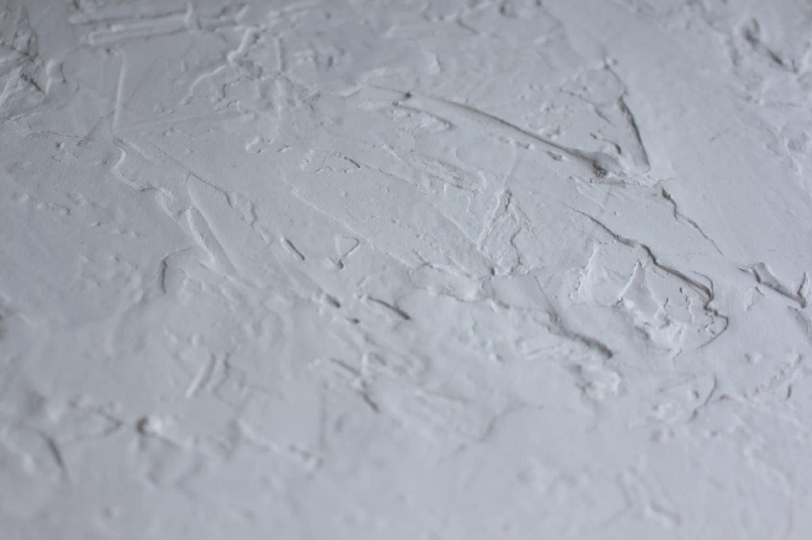
Gramado · Canela · Serra Gaúcha
Gesso convencional, drywall, sancas com iluminação e pintura. Da primeira medida à última demão — obra limpa, prazo combinado e acabamento que você vê de perto sem achar defeito.
O que fazemos
Um ambiente pronto. Fazemos a estrutura, o fechamento, o acabamento e a pintura — então ninguém empurra responsabilidade para o próximo. Você fala com uma pessoa só do começo ao fim.
Placa convencional, junta invisível e nível conferido a laser. O forro que some — você olha e só vê o teto.
Paredes, divisórias e nichos. Leve, rápido e com espaço interno para passar elétrica e isolamento acústico.
Aberta, fechada ou invertida. Desenhamos a sanca junto com a fita de LED, para a luz cair onde tem que cair.
Massa, lixa e demão na quantidade certa. Parede lisa de verdade, sem emenda aparecendo na luz da tarde.
Como fazemos
Antes e depois
O mesmo ambiente, a mesma metragem, a mesma janela. O que mudou foi o teto e a parede.
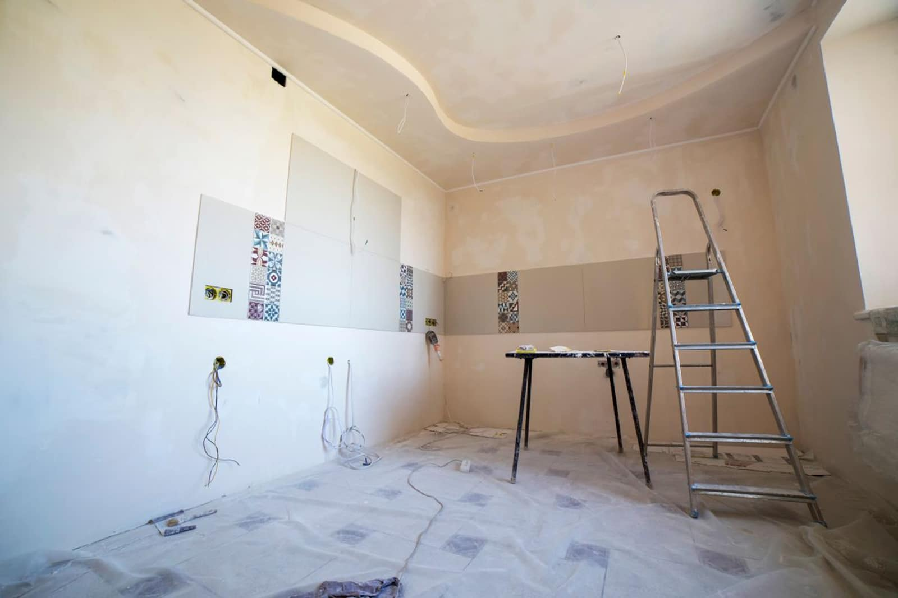
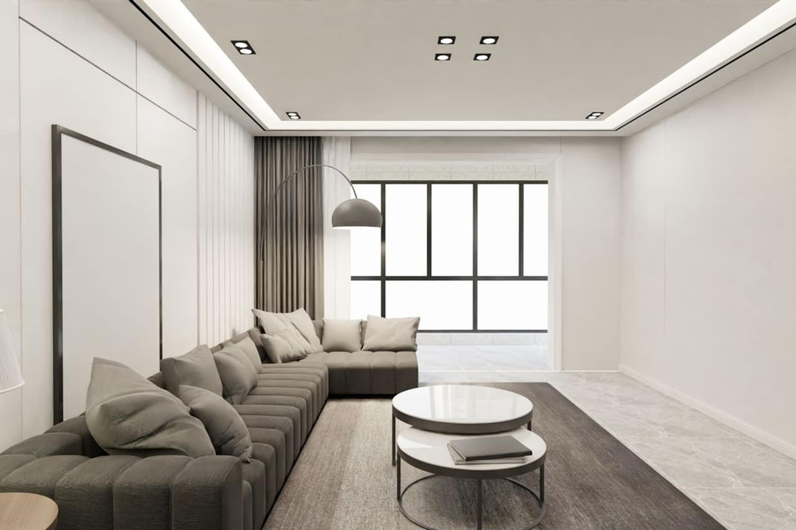
Antes DepoisObras
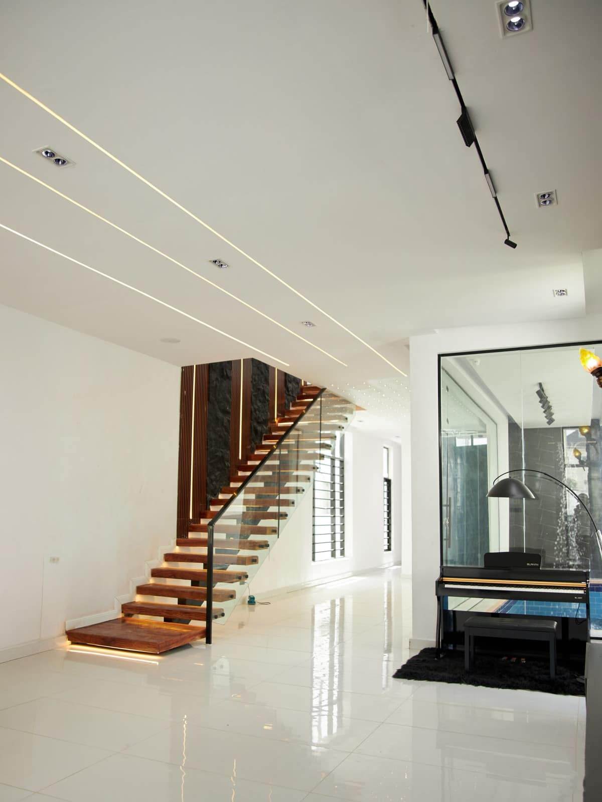
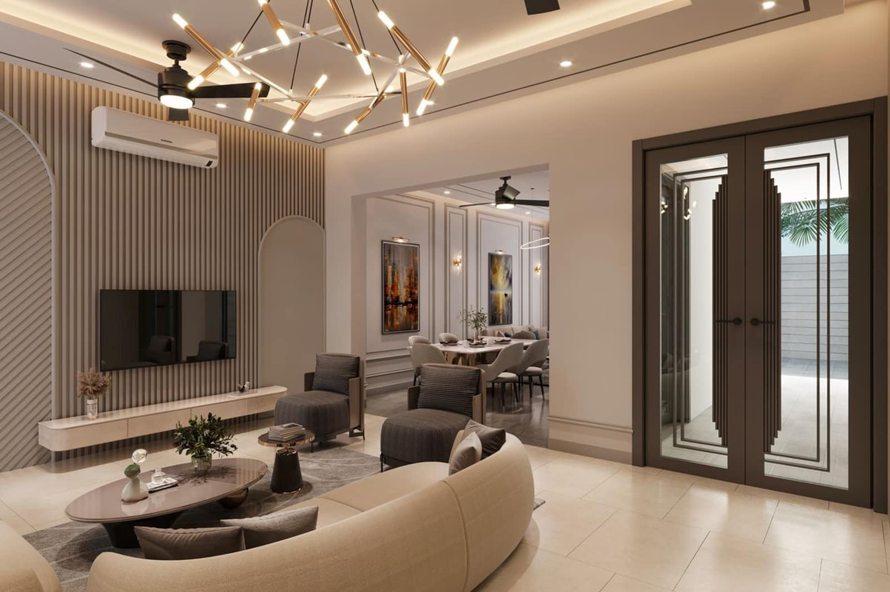
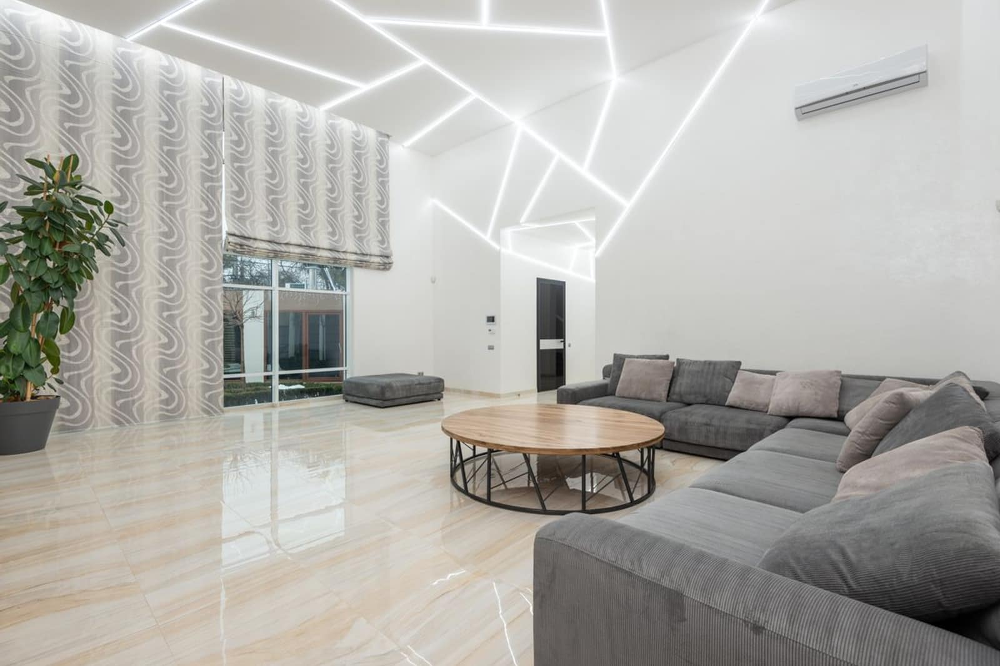
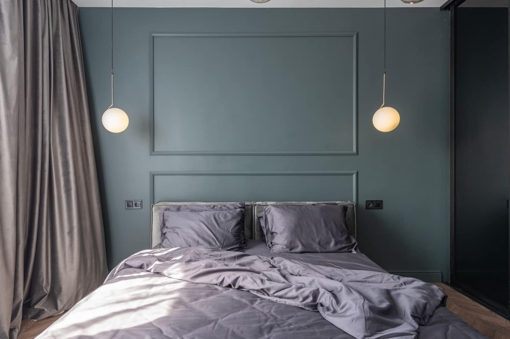
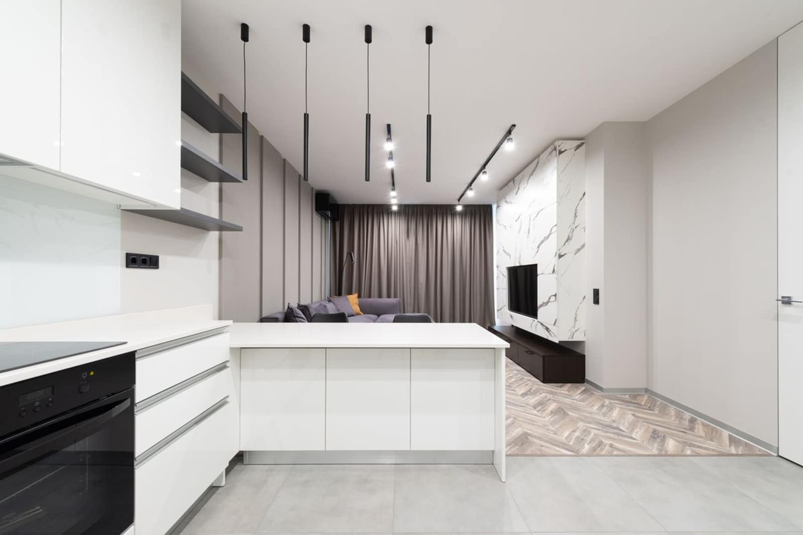
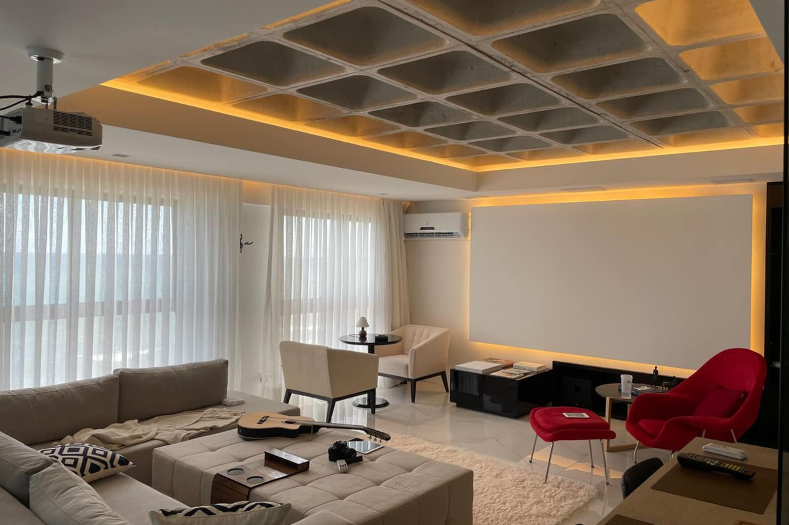
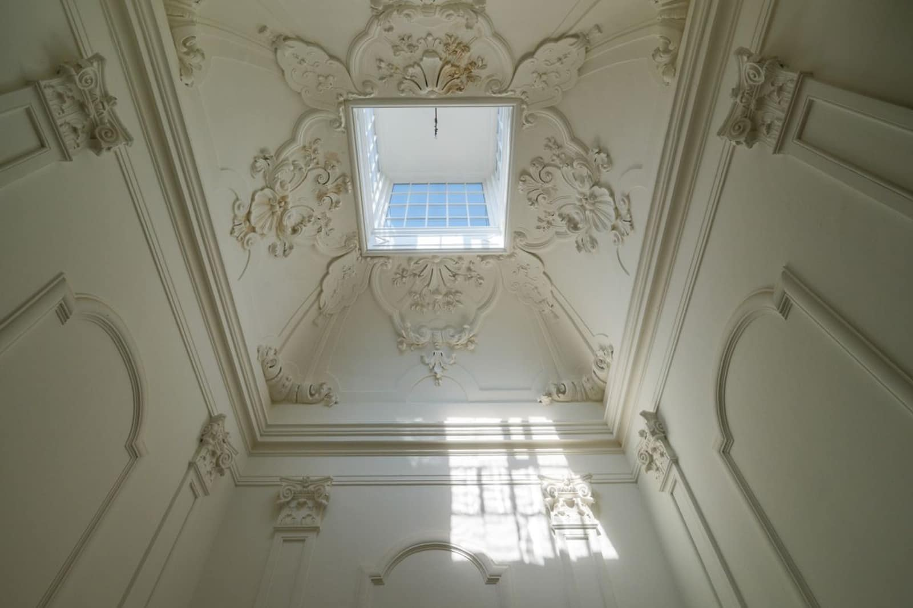
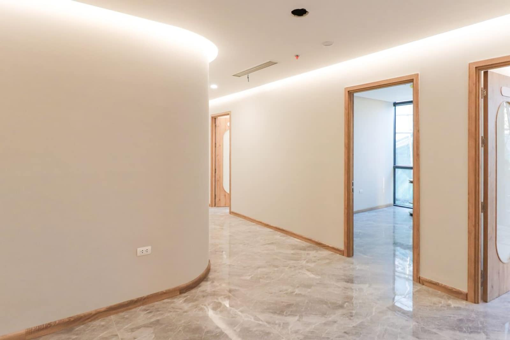
Nosso combinado
Como funciona
Manda a foto do ambiente no WhatsApp. Já dá para adiantar muita coisa por ali.
Vamos até o local, medimos e conversamos sobre iluminação. Sem custo e sem compromisso.
Valor fechado por item, prazo e forma de pagamento. Você aprova, entramos na agenda.
Equipe própria, material combinado e você acompanhando. Entregamos limpo e pronto para usar.
Dúvidas
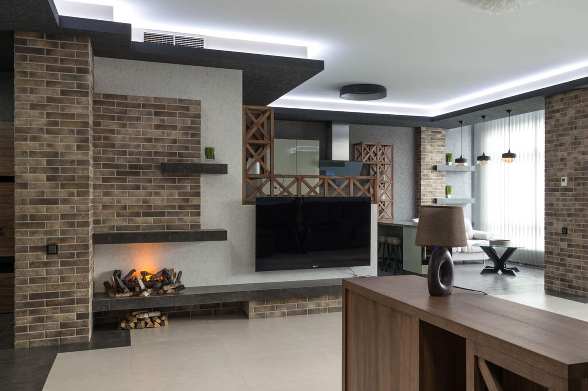
Seu ambiente novo começa aqui
Sem compromisso, sem insistência. Se o que você quer não compensa, a gente fala isso também.
Falar no WhatsApp · 54 99367-4280